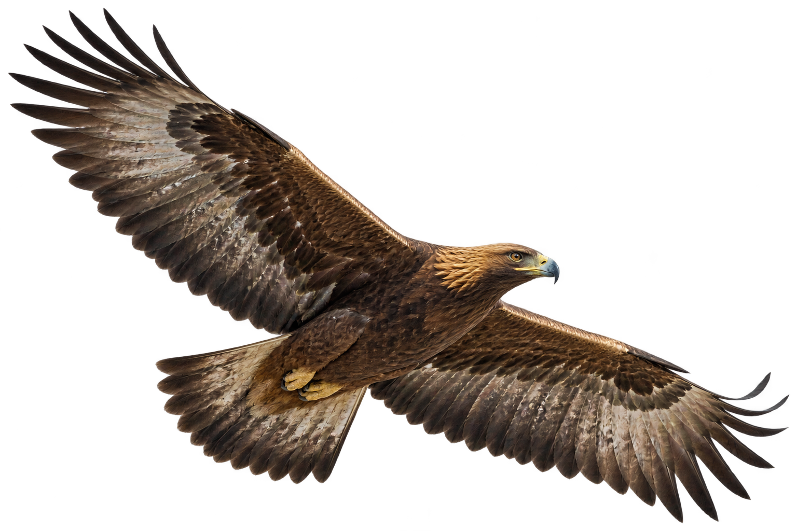

A strategic foundation
Geography and investment style guide our equity choices. Duration, short credit and real assets broaden the portfolio’s economic exposures.
Round 1 · Strategic allocation
USI Lugano · Master in Finance
A broader perspective.
A disciplined approach.
A student-led investment project bringing together global markets, quantitative research and a clear framework for risk.
01 · Our approach
Our USD 100 million simulated mandate combines global equities, Treasury and corporate bonds, gold and commodity futures. We begin with the risks we want to hold, then assess how those exposures work together.
Geography and investment style guide our equity choices. Duration, short credit and real assets broaden the portfolio’s economic exposures.
Round 1 · Strategic allocationThe next round develops individual-stock ideas, evaluated against our strategic core and the challenge’s tactical risk budget.
Round 2 · Discretionary equityThe final round combines a systematic strategy with a macroeconomic view, supported by explicit tests and a documented allocation process.
Round 3 · Quantitative & macroInvestment decisions supported by evidence.
Assumptions and limitations made explicit.
02 · Research & reporting
Our investment case, the supporting analysis and the record of our decisions, published round by round.
Publication status is shown for each document. Draft and planned material will become downloadable when released.
03 · Performance
We report the return earned alongside the risk taken. Live challenge results will be published after portfolio inception, separately from historical backtests.
Live results are not available yet. The portfolio will be entered on 17 or 18 October using the 16 October 2026 closing prices.
Five Master in Finance students at Università della Svizzera italiana, Lugano. Our work brings together investment research, quantitative analysis and a shared responsibility for the portfolio.